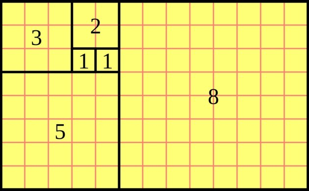

O que é a sequência de fibonacci?
A Sequência de Fibonacci é uma sequência numérica infinita que foi elaborada pelo matemático
italiano Leonardo Pisa, também conhecido como Leonardo Bigollo ou Leonardo Fibonacci. Começando
pelo número 1, a sequência é formada pela soma de cada numeral com o número que o antecede. Ou
seja, 1 + 1 = 2, 2 + 1 = 3, 3 + 2 = 5, e assim por diante.
1, 1, 2, 3, 5, 8, 13, 21, 34, 55, 89, ...
Esta sequência foi criada no ano de 1202 quando o matemático descreveu o crescimento de uma
população de coelhos. Em termos matemáticos, escreveríamos a fórmula com "an", mas para
homenagear o matemático a fórmula pode ser descrita como Fn = Fn - 1 + Fn - 2, no qual "n" é o
chamado índice e "fn" o termo geral
Misteriosamente, a Sequência de Fibonacci está presente em diversos fenômenos da natureza,
organismos vivos e fatos do nosso cotidiano. Ela pode ser aplicada em inúmeros casos da
matemática, como também na ciência da computação e na teoria de jogos. Ela está presente até na
análise de mercados financeiros, já que alguns matemáticos defendem que as flutuações das ações
seguem um padrão de crescimento e decréscimo que espelha a Sequência.
Mas não para por aí. Ao transformar esses números em quadrados e dispô-los de maneira
geométrica, pode ser construído um retângulo com características específicas, chamado de
Retângulo de Ouro. Se trata de uma forma geométrica com a seguinte propriedade: se o dividirmos
em um quadrado e em um outro retângulo, o novo retângulo será semelhante ao original.

Espiral de Fibonacci
A partir daí, se desenharmos um arco seguindo a sequência numérica dentro desse retângulo, é
possível traçar uma espiral perfeita, a chamada Espiral de Fibonacci.
A Espiral de Fibonacci aparece em diversos casos da natureza ou da fisiologia humana. Veja
alguns dos mais famosos:
Girassol
Quando olhamos para as sementes na flor do girassol, conseguimos perceber que ela forma uma
espiral, tanto para um lado quando para o outro. Ambos os sentidos têm a proporção da Sequência
de Fibonacci.
Caracol
Do corpo até a cabeça do caracol, é possível aplicar com perfeição a sequência de Fibonacci.
Veja na ilustração abaixo:
Pinhas
O desenho das escamas da pinha também segue a mesma lógica.
Plantas
A planta de nome científico Aloe polyphylla tem uma espiral semelhante à uma mandala, e folhas
dispostas em uma simetria impressionante.
Furacões
A imagem da formação de um furação também se aplica à Sequência de Fibonacci.
Conchas
A imagem da concha Nautilus Seccionada exprime com precisão a Espiral.
Proporção áurea
Os números da Sequência de Fibonacci formam o que se conhece como proporção áurea, um
conceito
visual amplamente difundido nas artes plásticas, arquitetura e design, por ser harmônico para os
olhos humanos. O valor da proporção áurea é de aproximadamente 1,618, o chamado número Phi, que
é obtido quando se divide um número com o seu antecessor da sequência de Fibonacci.
Esse número pode ser encontrado sob diferentes alcunhas, como proporção áurea, número de ouro,
número áureo, proporção dourada, razão áurea, razão de ouro, divina proporção, proporção em
extrema razão, divisão de extrema razão, ou, simplesmente, Φ (Phi).
O mundo da arte não seria o mesmo sem a proporção áurea
Pode parecer impressionante, mas as proporções do corpo humano se aproximam muito da proporção
áurea em várias situações. Como por exemplo, calculando a divisão da sua altura pela medida do
seu umbigo até o chão. Assim como se aplica na relação entre o comprimento e a largura do útero
de mulheres em suas idades mais férteis, dos 16 anos aos 20 anos.
Grandes obras primas da história do mundo também espelham o Número de Ouro, como as pirâmides do
Egito. Alguns estudos apontam para a presença de Phi em relação à base e sua altura, além da
distância entre os blocos. Uma das obras-primas arquitetônicas de Gaudí, a Igreja Sagrada
Família, em Barcelona, tem vários elementos que aludem à proporção áurea, como a famosa escada
em espiral, que lembra a concha de um caracol.
Mas a proporção áurea fica também muito evidente nas obras de artes plásticas de artistas
consagrados:
O número de ouro, também conhecido pela letra grega (phi) e representada pelo número 1,618, têm
fascinado intelectuais de diferentes áreas, durante pelo ...
Proporção áurea ou razão áurea consiste numa constante real algébrica irracional. É
representada
pela
divisão de uma reta em dois segmentos (a e b), sendo que quando a soma desses segmentos é
dividida
pela
parte mais longa, o resultado obtido é de aproximadamente 1.61803398875. Este valor é
chamado de
"número
de Ouro".